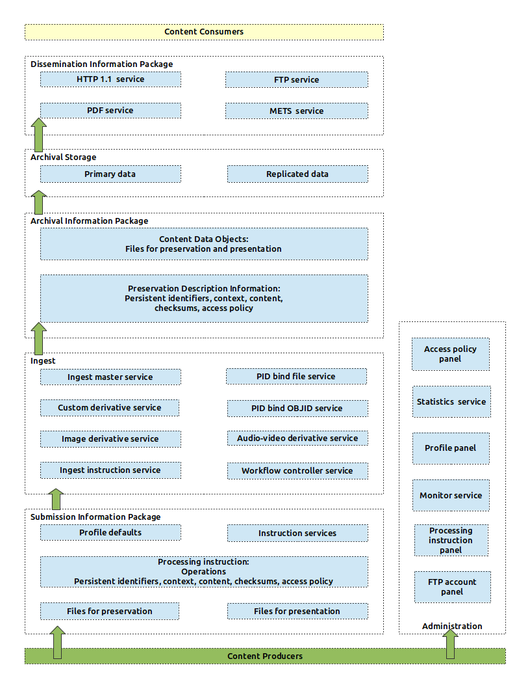
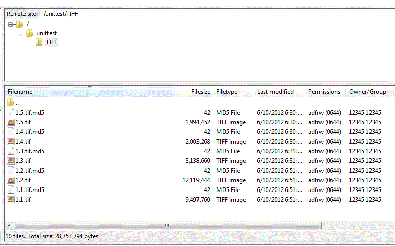
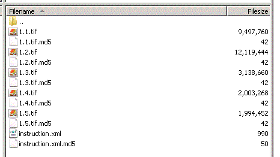

(Quick Reference)
Object repository - Reference Documentation
Authors: Lucien van Wouw
Version: 1.4
1 Introduction
The object repository should is a service oriented framework. It offers a collection of services:
- ftp upload of files to a staging area (temporary storage)
- ingesting those files and related metadata into persistent storage
- image, audio and video derivative generation
- accepts custom made derivatives of any content type
- persistent identifier creation by calling a PID webservice. Here persistent URLs become available that resolve to the stored resource and compound object locations
- anonymous and account controlled dissemination of the resources via HTTP and FTP
- exports compound objects by via METS and PDF
- an administration interface plus account system to manage the above services and access policies
Purpose of this documentation
This document will describe two aspects as outlined in this sketch:
- What it is: on the left side are the service levels placed in context. A description of them should make clear how the framework handles the digital information you supply to it.
- How to operate it: on the right is the administration panel where you manage your content. A guide will help you how to control it.

1.1 Change Log
Current release, version 1.4
- Access to repository resources can be set for user accounts. Access policies are applicable to these accounts.
- Specific resources and their download limits and expiration dates can be assigned to such accounts
Version 1.3
- Restructured the documentation to include architecture
- Double key authentication is required for delete actions
- Embargo support
Version 1.2
- the structure of compound objects can be expressed in the processing instruction: file order and a group identifier
- based on this structure; it is possible to export METS and PDF files on the fly via dissemination
- a PID can be set for the group identifier
- instructions can be recreated after an ingest
- pid lookup is possible at the "stored objects" panel
- read only FTP access to the master and derivatives for administrative accounts
Deprecated: CPADMIN accounts can no longer be set via the administration interface. Contact the administrator of to
distribute such privileged accounts.
Version 1.1
- Derivative production of audiovideo
- Custom policies can change the default 'closed' access for masters to open and restricted
- Deletion of masters and derivatives are removable via an instruction
- Content and usage statistics are available on the main dashboard
Version 1.0.1
The administration interface has links in the footer to:
- Build info showing the most recent changes
- For reporting bugs and feature request please visit Jira
Version 1.0
First release
1.2 Milestones
Milestones (until June 2013)
| date | milestone | status |
|---|
| June 2012 | Maintain code on GitHub | released |
| July 2012 | Documentation of object repository design | released |
| July - November 2012 (August Vacation period) | Derivative production for video | released |
| July - November 2012 (August Vacation period) | Derivative production for audio | released |
| July 2012 | oauth2 administrative Interface | released |
| July 2012 | Captcha to administrative Interface | replaced by separate authentication procedure & released |
| July 2012 | Add IPv6 compatibility to Infrastructure and software | released |
| July 2012 | Maintain and support helpdesk | released |
| July 2012 | Documenting the Object repository infrastructure | released |
| September 2012 | Content and usage statistics | released |
| November 2012 | Secure Key-based delivery of content ( e.g. for webshop and other external clients ) | released |
| September 2012 | ‘delete-files’ and/or ‘delete-collections’ | released |
| December 2012 | Documentation on how to setup an object repository | pending |
| February 2013 | METS to pdf converter | released |
| April 2013 | guest ftp accounts | pending |
1.3 Roadmap
Although not planned, the following services are investigated for inclusion in the object repository.
Integrity assurance service
The object-repository needs a further integrity validation of stored master material. This involves random checksum calculations on files; and repairing invalid information.
File identification and validation service
A service that invokes Fido, JHOVE and PRONOM for file identification to assist determining and verifying a given content type.
2 Submission information package
The stagingarea is where it all begins. Here the content producer - possibly through the agent of a digital archivist -
assembles the Digital files and metadata needed for the archival and dissemination package. This information can be
delivered via ftp for example, or by disk where an operator placed the content onto the staging area.
The manifest for this submission packaged is called a processing instruction. It declares the files placed on the staging
area and contains related metadata. This instruction can be custom made by the producer's own tools; or be partly or entirely manufactured inside the object repository administration panels.
The assembly of an submission package - and the archival ingest - can be completely automated or performed manually step-by-step.
2.1 Files and their delivery
2.1.1 Files for preservation
Digital data that is intended to be preserved is designated as a "master". These are files whose content is to be stored perpetually. Such data is kept in a way to allow for media migration; and the automatic production of derivatives.
The data can be of any content type: audio, video, image, text, software. Simply put: a file with a name that has one or more bytes.
2.1.2 Files for presentation
Derivatives and other data are used for presentational purposes as opposed to emitting the master files in the dissemination package. The Content Producer can choose to supply any type of custom data. For example png images to offer a preview image for an audio master file.
The files intended for presentation should be regarded as temporal in nature and may be deleted or replaced with different content all the time.
The object repository has services to generate derivative content from the master as well. Whether custom derivatives are supplied or automatically generated, their use is entirely optional.
Metadata concern the files that are submitted for ingest; and also the operations needed to determine how these files are processed at ingest time in order to assemble the desired archival package.
Not all metadata needs to be supplied. The ingest procedure will add new content metadata about the stored media. For example image resolution, frames per second for movies.
Metadata is expressed via a processing instruction. The latter can be defined by the content producer via an XML document and through the administration panel.
Metadata about the files is purely technical, administrative and structural in nature. A minimum amount of it is required for assembling a submission package:
- Access policies to indicate the degrees of availability to the content consumer.
- A content type to identify the digital files.
- Fixity: a MD5 checksum to ensure file transport integrity when it was uploaded from the producer into the archival package.
- Reference: persistent identifiers to allow for access durability between information systems.
- Optional: a content producer may provide context information such as file order to describe physical relations ( pages of a book for example ) together with an optional reference to a bundled set of files.
The submission packaged needs additional instructions to determine which services are invoked during ingest. Such
services involve amongst others:
- which files to add, delete or update
- if derivatives should be created
- if Persistent identifiers are to be created or bound
Descriptive metadata such as title, subject, or provenance is not part of the architecture of the object repository. The latter domain is about delivery of digital content and does facilitate discovery of content via a search-and-find solution.
The domain of descriptive metadata storage remains that of catalog, archival and library systems and related search solutions. The relationship between the two domains is kept by the reference information - persistent identifiers - that is bound to the dissemination package.
2.3 The processing instruction services
Metadata is expressed with processing instructions. Various instruction services will assist the content producer during the assembling of the submission package. These involve both the creation and import of custom made instructions. And the export and validation of those instructions.
The processing instruction will take default values from a set Profile. This profile has already all the global metadata properties set such as access policies and the desired ingest services to use.
2.3.1 Autocreate Instruction service
The autocreate instruction service enables the content producer to create a complete and valid processing instruction. The service will calculate the checksum and if desired reserve persistent identifier per file. Any other settings will be inherited from the Profile.
2.3.2 Validate Instruction service
The validation service will ensure data integrity over all stages of the submission phase. When master files are ingested this procedure will look if:
- all files in the staging area are in fact declared in the instruction as stagingfile elements
- all stagingfile elements in the instruction are indeed found the main folder content
- the md5 checksum values match
- a persistent identifier is present; and not used elsewhere in the instruction
- the file has at least one byte
If the instruction is used for post-ingest operations (e.g. creation of derivatives, ingest of custom derivatives, re-creation of labels or access policy) whereby an existing archival package is updated, this validation will only check if the persistent identifier is registered.
This service will unlock the ingest service, after it confirmed the instruction is without error.
2.3.3 Import Instruction service
The import service will read in a custom made processing instruction that is placed on the staging area. Provided:
- it is a well formed XML document;
- the submission package did not already include an instruction. A new instruction will only be accepted if a current processing instruction is cleared from the system via the administration panel.
After an import, the service will invoke the instructino validation service.
2.3.4 Export Instruction service
A processing instruction can be downloaded while staged and at post-ingest time. For example to add modifications to it outside the administration panel; or to embed it's referential metadata in the producer's local metadata system.
2.3.5 Recreate Instruction service
This service will create an instruction for files that were already ingested and are part of the archival package. This instruction will cover all files that share the same label. Or the individual file by referencing the persistent identifier.
3 Ingest
The ingest is a sequence of tasks whereby the submission package is transformed into the archival package. The latter is then persisted into the archival storage. These tasks are performed by various services, each performing operations following their own logic.
3.1 Ingest instruction service
This service will become available during the submission stage, once the Instruction validation service confirmed all files to be in pristine condition.The service initiates each individually declared file in the instruction, thus kick starting the file's lifecycle. The requirements this service adheres to is for an addition, delete or update action:
- Select each stagingfile element in the instruction.
- Verify if the element has been validated.
- Set the first task to start the cycle of the file's ingest career.
- If all stagingfile elements are set return success
- If not, unset all tasks and throw an error
3.2 Workflow controller service
The workflow controller is the brain of the object repository.
Directly after the Instruction Ingest procedure was successful; the controller will append a stack of logically ordered tasks to each stagingfile element within the instruction. For example to ingest the master file, then to bind a persistent identifier to the dissemination package resolve url, then to create derivatives. These stacked tasks are picked up one-by-one by the same workflow controller. For each task it will send a message to a designated message queue.
Each Ingest service listens to their own designated message queue. It will execute it's own logic after a task is taken from the message queue. It will report the task status, success and failure back to the instruction's task element. There the workflow controller can pick it up again and decide what to do next.
Once all the tasks are processed, the workflow will end for the staged file. When all staged files tasks were completed, the ingest is completed - with or without any remaining issues.
The administration panel shows the result of the ingest to the content manager.
3.3 Ingest master service
The Ingest master service is specifically intended to persist master files. It is the first task to do when an ingest
starts… when the plan is set so to ingest new or updated master files that is.
The requirements this service adheres to is for an addition or update action:
- look for the file on the staging area
- if found; add the file to the archival storage
- if not found; update the preservation description information in the archival package
- if no such information was known ( no persistent identifier ) throw an error
- compare the checksum between the submission package and the archival package
- when these match, add the preservation description information to the archival package.
- if there is a mismatch, throw an error
- return success
For a delete action:
- remove the content data objects ( the master file )
- check the removal
- verify the removal action. if it succeeded, continue
- if removal failed, throw an error
- remove the preservation description information
- verify the removal action. if it succeeded, continue
- if removal failed, throw an error
- return success
3.4 PID services
The Persistent identifier services will bind the fixity information to the resolve URLs of what is the dissemination package.
This will produce stable, resolvable URLs to the object repository's consumers.
The PID calling services are only available if the content producer has outsourced - or hosts - a PID webservice. The PID webservice
offers SOAP methods to manage the Handle System(r) resolution technology. As a PID webservice account is associated with a
webservice key to operate it, the producer needs to add that key to their Profile.
Producers that have their own resolver technology should make such bindings themselves using the existing Dissemination conventions
available.
3.4.1 PID bind file service
The PID file service will bind persistent identifiers to resolve URLs of stored file's. It will use the Handle System's
capacity to handle multiple resolve URLs per PID. It will follow a convention to make such binds. For the PID:
http://hdl.handle.net/[persistent identifier]?locatt=view:[dissemination type]and the bind to the resolve URL:
http://[object repository domain]/file/[dissemination type]/[persistent identifier]The locatt@ is a qualifier that specifies the dissemination type. For as the dissemination package may offer several
views of the data, this qualifier will lead the consumer to them. For example, if this was your PID:
12345/1then the persistent URLs of the master and derivatives become by convention:
| view | persistent URL | Resolve Url |
|---|
| metadata | http://hdl.handle.net/12345/1 | http://disseminate.objectrepository.org/metadata/12345/1 |
| master | http://hdl.handle.net/12345/1?locatt=view:master | http://disseminate.objectrepository.org/file/master/12345/1 |
| level 1 derivative | http://hdl.handle.net/12345/1?locatt=view:level1 | http://disseminate.objectrepository.org/file/level1/12345/1 |
| level 2 derivative | http://hdl.handle.net/12345/1?locatt=view:level2 | http://disseminate.objectrepository.org/file/level2/12345/1 |
| level 3 derivative | http://hdl.handle.net/12345/1?locatt=view:level3 | http://disseminate.objectrepository.org/file/level2/12345/1 |
The requirements this service adheres to is for an addition or update action:
- Construct a PID webservice SOAP request. This request contains the persistent identifier; and the qualifiers per dissemination resolve URLs.
- Call the PID webservice using the PID webservice key.
- Check for the PID webservice response
- If an invalid or response, service unavailability or a failure message is in the response, then throw an error
- return success
For a delete action:
- remove the persistent identifier from the PID webservice
- Check for the PID webservice response
- If an invalid or response, service unavailability or a failure message is in the response, then throw an error
- return success
3.4.2 PID bind OBJID service
The PID OBJID service will bind a compound object's persistent identifier (the OBJID ) to the Mets and PDF dissemination services. These are exposed via conventional resolve URLs that when invoked produce METS document and PDF file renderings.
As an added feature it will point to the derivative of the first file the compound object consists of. This latter will be useful to offer a preview image for the compound object.
The persistent identifiers convention for OBJIDs is:
http://hdl.handle.net/[persistent identifier]?locatt=view:[dissemination type]And the resolve URL convention:
http://[object repository domain]/[mets or pdf]/[persistent identifier]| view | persistent URL | Resolve Url |
|---|
| mets | http://hdl.handle.net/12345/my-object-id | http://disseminate.objectrepository.org/mets/12345/my-object-id |
| master | http://hdl.handle.net/12345/my-object-id?locatt=view:master | http://disseminate.objectrepository.org/mets/12345/my-object-id |
| pdf | http://hdl.handle.net/12345/my-object-id?locatt=view:pdf | http://disseminate.objectrepository.org/pdf/12345/my-object-id |
| level 1 derivative | http://hdl.handle.net/12345/my-object-id?locatt=view:level1 | http://disseminate.objectrepository.org/file/level1/12345/1.1 |
| level 2 derivative | http://hdl.handle.net/12345/my-object-id?locatt=view:level2 | http://disseminate.objectrepository.org/file/level2/12345/1.1 |
| level 3 derivative | http://hdl.handle.net/12345/my-object-id?locatt=view:level3 | http://disseminate.objectrepository.org/file/level2/12345/1.1 |
3.5 Ingest derivative services
The object repository derivative services will generate - on command and if possible - three types
of preview material which is intended as display to the consumer. There range from "light weight" presentations to "heavy"
normalizations of the original master data. Derivative production may involve a simple reduction; but also the introduction
of a completely new content type.
The types are:
- Level 1 derivatives: these are normalisations. Or near-enough reproductions of the master files.
- level 2 derivatives: medium sized, fit-to-screen sized content. That still give a good insight of the details of the master files.
- level 3 derivatives: small, quick-peek, thumbnail like material.
Both master and derivatives become part of the archival package, be it that only the master has the intended durable
status. It goes without saying that derivative production is only possible after a master is persisted and part of
the archival package.
Supplying the submission package of custom derivatives is also possible. The precise interpretation of what a level 1, 2 or 3 is therefor at the discretion of the content producer.
Derivative services will produce a derivative when:
- No derivative of that level exists;
- Or when the processing instruction explicitly states to replace existing derivatives.
- If not, the action is skipped.
3.5.1 Custom derivative service
At any time the content producer can offer their own custom derivatives. These can be of any content type or file size.
It is advisable to remain consistent with regard to the to the level 1, 2 and 3 derivative types.
The requirements this service adheres to is for an addition or update action:
- Look for a custom placed derivative in the submission package
- if not found, return success
- if found, determine the derivative level
- calculate a md5 checksum
- add the file to the archival storage
- compare the checksum between the submission package and the archival package
- when these match, add the preservation description information to the archival package.
- if there is a mismatch, throw an error
- return success
For a delete action:
- remove the content data objects ( the derivative file )
- check the removal
- verify the removal action. if it succeeded, continue
- if removal failed, throw an error
- remove the preservation description information
- verify the removal action. if it succeeded, continue
- if removal failed, throw an error
- return success
3.5.2 Image derivative service
It attempts to create three levels for images and first page pdf documents:
- level 1: high print quality; standardization to pdf
- level 2: medium screen quality; length and width reduction
- level 3: small, thumbnail quality; length and width and resolution reduction
The requirements this service adheres to is for an addition or update action:
- Obtain the master file; or if available a suitable level 1 derivative from the archival storage
- Produce a derivative using ImageMagick
- calculate a md5 checksum
- add the file to the archival storage
- compare the checksum between the submission package and the archival package
- when these match, add the preservation description information to the archival package.
- if there is a mismatch, throw an error
- return success
For a delete action:
- remove the content data objects ( the derivative file )
- check the removal
- verify the removal action. if it succeeded, continue
- if removal failed, throw an error
- remove the preservation description information
- verify the removal action. if it succeeded, continue
- if removal failed, throw an error
- return success
3.5.3 Audio-video derivative service
The Audio and Video derivative service will turn the master video or audio file into a derivative.
Audio additions
For master audio, the service will produce a level 1 type, high quality mp3. The requirements this service adheres to is to:
- retrieve the master audio file
- use ffmpeg software to create the audio file in the desired mp3 content type
- add the derivative to the archival package
- when issues arrive, throw an error
- otherwise return success
Video additions
For video, three derivative levels are produced:
Level 1
A high quality h264 AAC (mp4) movie.
The requirements this service adheres to is for an addition or update action:
- retrieve the master video file
- use ffmpeg software to create the video file in the desired mp4 content type. No resolution, frame or height and width are altered.
- calculate a md5 checksum
- add the file to the archival storage
- compare the checksum between the submission package and the archival package
- when these match, add the preservation description information to the archival package.
- if there is a mismatch, throw an error
- return success
Level 2
A montage of 16 stills taken from the entire movie's range.
The requirements this service adheres to is for an addition or update action:
- retrieve the level 1 derivative video file. Or if not available the master.
- use ffmpeg software to create 16 video stills; the height is set to about 800px each.
- use ImageMagick to collate these images into one image/png file
- calculate a md5 checksum
- add the file to the archival storage
- compare the checksum between the submission package and the archival package
- when these match, add the preservation description information to the archival package.
- if there is a mismatch, throw an error
- return success
Level 3
A small, thumbnail quality taken from the middle of the movie.
The requirements this service adheres to is for an addition or update action:
- retrieve the level 1 derivative video file. Or if not available the master.
- use ffmpeg software to create a single video stills from an estimated "middle" of the movie.
- use ImageMagick to scale the image into one image/png file
- calculate a md5 checksum
- add the file to the archival storage
- compare the checksum between the submission package and the archival package
- when these match, add the preservation description information to the archival package.
- if there is a mismatch, throw an error
- return success
Removal
The requirements this service adheres to is for a removal action is:
- remove the content data objects ( the derivative file )
- check the removal
- verify the removal action. if it succeeded, continue
- if removal failed, throw an error
- remove the preservation description information
- verify the removal action. if it succeeded, continue
- if removal failed, throw an error
- return success
4 Archival information package
The archival package is complete once the ingest workflow applied all it's tasks. At a minimum the package consists of at least
two documents: the file to be preserved and it's metadata.
4.1 Preservation Description Information
This document consists of the following archival elements:
| element | type | purpose |
|---|
| md5 | number | The md5 checksum for the stored file |
| length | number | The length in bytes of the file |
| filename | string | original file |
| contentType | string | The mimetype |
| metadata.pid | string | The persistent identifier |
| metadata.pidType | string | The indicator of the type of pid resolver |
| metadata.resolverBaseUrl | string | The base URL to prefix the metadata.pid value with |
| metadata.objid | string | The object identifier or group identifier |
| metadata.seq | number | The physical order of the file vis a vis other files under the shared metadata.objid |
| metadata.content | json | The fingerprint of the content. Such as width, length, resolution, etc. |
| metadata.access | string | Access status of this file and all |
| metadata.fileSet | string | the location of the file in the dissemination package |
| metadata.l | string | the relative location of the file in the dissemination package |
| metadata.label | string | the label for the dissemination package |
| metadata.firstUploadDate | date | The date the file with this metadata.pid value was first uploaded |
| uploadDate | date | The last date this file was uploaded. |
For example, an image:
"_id" : NumberLong(12345),
"contentType" : "image/jpeg",
"filename" : "myfile.TIFF",
"length" : NumberLong(10058),
"md5" : "f1c8b344033c30f1670626b087b607bc",
"metadata" : {
"access" : "restricted",
"content" : {
"x-resolution" : 72,
"y-resolution" : 72,
"width" : 368,
"height" : 313
},
"fileSet" : "/data/stagingarea/12345/12347/2007-08-27",
"firstUploadDate" : ISODate("2012-06-27T15:15:57.957Z"),
"l" : "/2007-08-27/30051/00/013",
"label" : "2012-06-27 batch filer4",
"pid" : "12345/30051000131778",
"pidType" : "or",
"resolverBaseUrl" : "http://hdl.handle.net/",
},
"uploadDate" : ISODate("2007-08-27T14:30:00Z")4.2 Content Data Object
The file stream itself is stored in one or more chunked documents. Each document has a checksum of its own.
| element | type | purpose |
|---|
| files_id | number | the local identifier |
| n | number | sequence of the chunk |
| data | Base64 | file stream |
| md5 | string | checksum of the chunk |
For example, for the earlier image:
"_id" : ObjectId(12345),
"files_id" : NumberLong(12345),
"n", 0,
"data" : BinData(0,"/9j/4AAQSkIdXbV (...snip...) Na8SalaRajGVUoC0ig=="),
"md5" : "f1c8b344033c30f1670626b087b607bc"
5 Archival Storage
Chunked data
Physically the data is stored into a NoSQL database called
MongoDB using the native driver support of GridFS.
With GridFS a document is created with the md5 checksum, contentType, length in a files collection. The ingest procedure will add to this
the preservation descriptive information. The actual byte stream is split up into 64MB sized segments called "chunks". Each segment is
stored as a document in a corresponding chunks collection. There is a one-to-many relation between the document in the files
collection and the documents in the chunks collection.
Whilst the files document contains the md5 for the entire file, each individual chunk has it's own checksum. This is not part of the
gridFS convention, but is added for future services that are responsible for error detection and repair of stored chunks. Should corruption
turn its ugly head, it will be easier to repair a small chunks; than the larger file it is part of.
The object-repository stores "master" files for preservation and "level1", "level2" and "level3" types of derivatives. Hence the
namespace of the collections are named accordingly.

Replication
Data is mirrored by real-time replication. Each write to the primary database is copied to the replica. As the primary databases are situated in
a different datacenter than the secondary databases, there always is a copy should one of the datacenter become unavailable - or at wost is destroyed.
Uninterrupted data delivery
To avoid a single point of failure the repository storage is constructed from replica sets. The replicaset is made out of a single readwrite
primary server which is responsible for storing content. The secondary read-only servers can deliver content to the dissemination package.
Should a primary fail because of a defect or be down for maintenance; then the secondary will take over the role of primary and resume normal operations.
However, write actions are suspended until the intended primary is available again.
Scalability by clustering
As the volume of the storage cannot be hold onto a single storage device, a distributed solution is implemented by sharding.
A shard contains a fragment that is part of the entire volume of data. When volume increases beyond the current storage capacity,
new shards can be added to facilitate the extra needed storage. This makes the solution completely scalable.
In addition: should a primary server in the cluster go down for whatever reason, then any ingest action can proceed via the other primaries in the cluster.

6 Dissemination information package
There are several dissemination services to deliver content.
In all cases the access to the dissemination package these services give is determined by access policies.
6.1 HTTP 1.1 service
The HTTP dissemination service is probably the most familiar technique to distributing content to the human consumer or API client.
Usually it is here persistent identifiers will need to resolve to. It offers:
Html page of the metadata
The archival package's preservation descriptive information is presented for the master and it's derivatives.
The conventional dissemination url is:
http://disseminate.objectrepository.org/metadata/[persistent identifier]Xml document of the metadata
Again the AIP rendered as a XML document. The conventional dissemination url is:
http://disseminate.objectrepository.org/metadata/[persistent identifier]?accept=xmlAn example of the response could be:
<?xml version="1.0" encoding="utf-8"?>
<orfiles xmlns="http://objectrepository.org/orfiles/1.0/">
<orfile>
<pid>10622/30051002935671</pid>
<resolverBaseUrl>http://hdl.handle.net/</resolverBaseUrl>
<pidurl>http://hdl.handle.net/10622/30051002935671</pidurl>
<filename>30051002935671.tif</filename>
<label>2012-09-08 batch filer4</label>
<access>restricted</access>
<master>
<pidurl>http://hdl.handle.net/10622/30051002935671?locatt=view:master</pidurl>
<resolveUrl>http://disseminate.objectrepository.org/file/master/10622/30051002935671</resolveUrl>
<contentType>image/tiff</contentType>
<length>293909478</length>
<content x-resolution="300.0" y-resolution="300.0" width="8066.0" height="12142.0"/>
<md5>dc3fc60cf5ec720fbef6cbfaf04d7352</md5>
<uploadDate>Tue Nov 29 13:21:00 CET 2011</uploadDate>
<firstUploadDate>Sat Sep 08 22:32:58 CEST 2012</firstUploadDate>
<lastUploadDate>Sat Sep 08 22:32:58 CEST 2012</lastUploadDate>
</master>
<level2>
<pidurl>http://hdl.handle.net/10622/30051002935671?locatt=view:level2</pidurl>
<resolveUrl>http://disseminate.objectrepository.org/file/level2/10622/30051002935671</resolveUrl>
<contentType>image/jpeg</contentType>
<length>102768</length>
<md5>15471cf308f739ea548496530277425d</md5>
<uploadDate>Sat Sep 08 22:34:06 CEST 2012</uploadDate>
<firstUploadDate>Sat Sep 08 22:34:06 CEST 2012</firstUploadDate>
<lastUploadDate>Sat Sep 08 22:34:06 CEST 2012</lastUploadDate>
</level2>
<level3>
<pidurl>http://hdl.handle.net/10622/30051002935671?locatt=view:level3</pidurl>
<resolveUrl>http://disseminate.objectrepository.org/file/level3/10622/30051002935671</resolveUrl>
<contentType>image/jpeg</contentType>
<length>21065</length>
<content height="350" width="232" x-resolution="72 PixelsPerInch" y-resolution="72 PixelsPerInch"/>
<md5>ba0682b465bf6d600d213eebb9b43388</md5>
<uploadDate>Sat Sep 08 22:34:01 CEST 2012</uploadDate>
<firstUploadDate>Sat Sep 08 22:34:01 CEST 2012</firstUploadDate>
<lastUploadDate>Sat Sep 08 22:34:01 CEST 2012</lastUploadDate>
</level3>
</orfile>
</orfiles>A file stream with mimetype
A http request for an openly accessible resource would return the corresponding file in the appropriate content
type such as an image. The template URL would be:
http://disseminate.objectrepository.org/file/[derivative level]/[persistent identifier]The returning filename can also be set by setting a contentType and filename parameter so:
http://disseminate.objectrepository.org/file/[derivative level]/[persistent identifier]?contentType=application/save&filename=myfile.tifStreaming
De HTTP service handles the HTTP 206 protocol, which will enable the streaming of content to most common audio and video players.
The Real Time Streaming Protocol is not supported.
6.2 FTP service
The content producer can download ingested files using ftp. The ftp home directory will look like this, showing the stored master and it's derivatives:
/master
/level1
/level2
/level3
From thereon the directory tree is similar to the way files are offered to the staging area when the dissemination package was assembled.
Use your favorite ftp client to access the data. Use these settings:
- connect to ftp.objectrepository.org
- set the ftp client to support an implicit FTP over TLS connection
- enable passive mode.
- your account is the same account with which you administer your object repository.
6.3 PDF service
A compound object can be disseminated as a PDF document. This is possible when at least one of the derivative layers is of an image type.
The dissemination URL of a pdf document is:
http://disseminate.objectrepository.org/pdf/[object-id]The default level of files used for this is set with the pdfLevel
element set in instruction. See pids.However the consumer can force a level yourself by adding it to the url so:http://disseminate.objectrepository.org/pdf/12345/my-object-id/derivative level@
If the level has a restrictive access or is not of a suitable mime type, the pdf will not render
6.4 METS service
The object repository can disseminate compound objects in a standardized way by exporting a by default profile level 3 Mets
document. Mets is a
metadata standard of the Library of Congres. As this is a standardized
way of describing files, their content type and their structure it can be used by third party software to render content.
The dissemination URL of a mets document is:
http://disseminate.objectrepository.org/mets/12345/my-object-id
And if the producer used a PID webservice, then the persistent identifier is
http://hdl.handle.net/12345/my-object-id
As an example, the Mets disseminated would be similar to:
<?xml version="1.0" encoding="UTF-8"?>
<mets xmlns="http://www.loc.gov/METS/" OBJID="10622/ARCH00483.511">
<fileSec>
<fileGrp ID="master" USE="archive image">
<file CHECKSUM="7ce13c6f87930f456a315ae2b8f4f599" CHECKSUMTYPE="MD5" CREATED="2013-03-24T20:09:14Z" ID="f1"
MIMETYPE="image/tiff" SIZE="112909902">
<FLocat LOCTYPE="HANDLE" xmlns:xlink="http://www.w3.org/1999/xlink"
xlink:href="http://hdl.handle.net/12345/my-identifier-a?locatt=view:master"
xlink:title="page_00001.tif" xlink:type="simple"/>
</file>
<file CHECKSUM="db4baeeaa72f9d70248dc86243ec67a6" CHECKSUMTYPE="MD5" CREATED="2013-03-24T16:10:37Z" ID="f2"
MIMETYPE="image/tiff" SIZE="34832744">
<FLocat LOCTYPE="HANDLE" xmlns:xlink="http://www.w3.org/1999/xlink"
xlink:href="http://hdl.handle.net/12345/my-identifier-b?locatt=view:master"
xlink:title="page_00002.tif" xlink:type="simple"/>
</file>
<file CHECKSUM="b94a379b69a22a06733c099fae756d5b" CHECKSUMTYPE="MD5" CREATED="2013-03-24T27:10:25Z" ID="f3"
MIMETYPE="image/tiff" SIZE="34609288">
<FLocat LOCTYPE="HANDLE" xmlns:xlink="http://www.w3.org/1999/xlink"
xlink:href="http://hdl.handle.net/12345/another-identifier-c?locatt=view:master"
xlink:title="page_00003.tif" xlink:type="simple"/>
</file>
</fileGrp>
<fileGrp ID="level1" USE="hires reference image">
<file CHECKSUM="372fc2b527e841c87ae1981203853ecb" CHECKSUMTYPE="MD5" CREATED="2013-03-27T12:01:34Z" ID="f40"
MIMETYPE="image/jpeg" SIZE="281588">
<FLocat LOCTYPE="HANDLE" xmlns:xlink="http://www.w3.org/1999/xlink"
xlink:href="http://hdl.handle.net/12345/my-identifier-a?locatt=view:level1"
xlink:title="page_00001.jpeg" xlink:type="simple"/>
</file>
<file CHECKSUM="5b6375afa835b2737ddc785de94c78df" CHECKSUMTYPE="MD5" CREATED="2013-03-27T12:01:35Z" ID="f41"
MIMETYPE="image/jpeg" SIZE="524663">
<FLocat LOCTYPE="HANDLE" xmlns:xlink="http://www.w3.org/1999/xlink"
xlink:href="http://hdl.handle.net/12345/my-identifier-b?locatt=view:level1"
xlink:title="page_00002.jpeg" xlink:type="simple"/>
</file>
<file CHECKSUM="a575e7376590a77451fa2c5d0cc6b388" CHECKSUMTYPE="MD5" CREATED="2013-03-27T12:01:36Z" ID="f42"
MIMETYPE="image/jpeg" SIZE="544376">
<FLocat LOCTYPE="HANDLE" xmlns:xlink="http://www.w3.org/1999/xlink"
xlink:href="http://hdl.handle.net/12345/another-identifier-c?locatt=view:level1"
xlink:title="page_00003.jpeg" xlink:type="simple"/>
</file>
</fileGrp>
<fileGrp ID="level2" USE="reference image">
<file CHECKSUM="1131b5eaabd7eb8266295dfa6e9deb15" CHECKSUMTYPE="MD5" CREATED="2013-03-27T49:03:54Z" ID="f79"
MIMETYPE="image/jpeg" SIZE="40477">
<FLocat LOCTYPE="HANDLE" xmlns:xlink="http://www.w3.org/1999/xlink"
xlink:href="http://hdl.handle.net/12345/my-identifier-a?locatt=view:level2"
xlink:title="page_00001.jpeg" xlink:type="simple"/>
</file>
<file CHECKSUM="29b93e7a719c6235f63822cbd31cf310" CHECKSUMTYPE="MD5" CREATED="2013-03-27T49:03:56Z" ID="f80"
MIMETYPE="image/jpeg" SIZE="74001">
<FLocat LOCTYPE="HANDLE" xmlns:xlink="http://www.w3.org/1999/xlink"
xlink:href="http://hdl.handle.net/12345/my-identifier-b?locatt=view:level2"
xlink:title="page_00002.jpeg" xlink:type="simple"/>
</file>
<file CHECKSUM="e237e2a6cbac9e12b92b870e7845f211" CHECKSUMTYPE="MD5" CREATED="2013-03-27T49:03:57Z" ID="f81"
MIMETYPE="image/jpeg" SIZE="82348">
<FLocat LOCTYPE="HANDLE" xmlns:xlink="http://www.w3.org/1999/xlink"
xlink:href="http://hdl.handle.net/12345/another-identifier-c?locatt=view:level2"
xlink:title="page_00003.jpeg" xlink:type="simple"/>
</file>
</fileGrp>
<fileGrp ID="level3" USE="thumbnail image">
<file CHECKSUM="51935fb67bbb50b2d2908401ba95119e" CHECKSUMTYPE="MD5" CREATED="2013-03-27T49:03:57Z"
ID="f118" MIMETYPE="image/jpeg" SIZE="2644">
<FLocat LOCTYPE="HANDLE" xmlns:xlink="http://www.w3.org/1999/xlink"
xlink:href="http://hdl.handle.net/12345/my-identifier-a?locatt=view:level3"
xlink:title="page_00001.jpeg" xlink:type="simple"/>
</file>
<file CHECKSUM="0f012b9052011cfa9791783895931505" CHECKSUMTYPE="MD5" CREATED="2013-03-27T49:03:58Z"
ID="f119" MIMETYPE="image/jpeg" SIZE="3864">
<FLocat LOCTYPE="HANDLE" xmlns:xlink="http://www.w3.org/1999/xlink"
xlink:href="http://hdl.handle.net/12345/my-identifier-b?locatt=view:level3"
xlink:title="page_00002.jpeg" xlink:type="simple"/>
</file>
<file CHECKSUM="844a307af425882c241d8f8256fc1698" CHECKSUMTYPE="MD5" CREATED="2013-03-27T50:03:00Z"
ID="f120" MIMETYPE="image/jpeg" SIZE="4676">
<FLocat LOCTYPE="HANDLE" xmlns:xlink="http://www.w3.org/1999/xlink"
xlink:href="http://hdl.handle.net/12345/another-identifier-c?locatt=view:level3"
xlink:title="page_00003.jpeg" xlink:type="simple"/>
</file>
</fileGrp>
</fileSec>
<structMap TYPE="physical">
<div>
<div ID="g0" LABEL="Page 1" ORDER="1" TYPE="page">
<fptr FILEID="f1"/>
<fptr FILEID="f40"/>
<fptr FILEID="f79"/>
<fptr FILEID="f118"/>
</div>
<div ID="g1" LABEL="Page 2" ORDER="2" TYPE="page">
<fptr FILEID="f2"/>
<fptr FILEID="f41"/>
<fptr FILEID="f80"/>
<fptr FILEID="f119"/>
</div>
<div ID="g2" LABEL="Page 3" ORDER="3" TYPE="page">
<fptr FILEID="f3"/>
<fptr FILEID="f42"/>
<fptr FILEID="f81"/>
<fptr FILEID="f120"/>
</div>
</div>
</structMap>
</mets>7 Preparing the submission package
When you prepare a submission package there are a number of questions to take into consideration. Namely:
- who will have access to the administration panel ?
- who is responsible for the FTP upload of digital files ?
- what is to be preserved ? And what is to be presented ? Is there need for producing derivatives or will you supply these ?
- what is the access status for the particular files that are to be submitted ?
- will you supply your own persistent identifiers; or will you use allow the repository to create these ?
- is there any context you want to preserve such as file ordering
Once decided you can use the administration interface to:
- create ftp accounts.
- set a profile. That is, defaults for the processing instruction such as access, mimetype, the prefered services to use
- define access policies
- oversee the production of instructions, starting procedures and monitor the status
- recreate past instructions
- download technical metadata of stored material
Access to the administration interface is possible via a privileged account only. Such accounts cannot be set
via the administration interface directly. Contact the administrator directly to set such accounts.
7.1 The staging area
Once you have selected the files intended for preservation and presentation you can upload these to the staging area. This is a work space where you can assemble your ingest package. Here you:
- use ftp to upload files to temporary storage and rearrange these
- optionally upload a custom XML processing instruction
7.1.1 Connecting to the stagingarea
To connect to the staging area you need one or more ftp accounts. A CP administrator can use the
Accounts section to manage these.
FileZilla and
WinSCP are known to work well with the staging area. To make a connection:
- create an ftp-account
- set the host name of the staging area to the one mentioned in the ftp account confirmation e-mail
- set the ftp client to support an explicit FTP over TLS connection
- enable passive mode.
- The ftp port to use is the default 21.
As a rule (and avoid confusion) use the CP user account to upload files and XML processing instructions with. Not your
CP administrator account.
7.1.2 Folder and file conventions
After a CP user (of course, ftp procedures can be automated also) logs in with a ftp-account, the first directory visible
is the
home directory
. A FTP client will show this as a "/".
The user should at least upload one
main folder
containing files (your dataset) in the
home directory. This example illustrates the upload of a main folder called "unittest" and it contains a sub folder with 5 files.

See there are 10 files ? For each file you upload to the staging area, the FTP server produces a md5 checksum. This is
stored next to the file in the format
filename.md5. The checksum it contains is compared the one you
deliver in a
processing instruction in order to assert integrity. It contains something like this:
181c838e29cbb0602da4a160eece2217 1.1.tif
You should not delete automatically created md5 files. If you do; the ingest of your files can take a long time.
Any folder or file that starts with a dot, will be ignored by the ingest procedures.
Also any digital file placed right in the home directory and not in a main folder will be ignored.
7.1.3 Supply custom derivatives
The object-repository has a service to create lower level copies of the masters. If you want you can add your own derivative material because it is of better quality or the type of derivative
manufacturing is not supported.
Conventional offerings
The position and names of the derivatives must follow conventions:
- the root folder in which the derivative is placed must be called ".level1" or ".level2" or ".level3". Notice these names start with a dot.
- the derivative filename must be identical ( case sensitive ) to that of the master filename - excluding the file extension. For example, if the master is called
MyFile.tiff or BigVideo.mpg then the custom derivative must be positioned and named like /.level1/MyFile.jpg or /.level2/BigVideo.mpg
- the derivative must be parallel to the master file.
- the extension of the derivative must be related to a known content type as indicated in this list. If you see that your derivative extension is not in this list, then make a feature request.
A few examples will clarify the points just made.
Example 1
A master is placed deep within some subfolders:
/main_folder/b/c/d/myLargeFile.tiff
And the derivative file is called
myLargeFile.pngThen a level1 derivative can be placed anywhere by
inserting a
.level1 folder thus:
/main_folder/b/c/d/.level1/myLargeFile.png/main_folder/b/c/.level1/myLargeFile.png/main_folder/b/.level1/d/myLargeFile.png/main_folder/.level1/c/d/myLargeFile.png
Or by
substituting a folder so:
/main_folder/b/c/.level1/myLargeFile.png/main_folder/b/.level1/d/myLargeFile.png/main_folder/.level1/c/d/myLargeFile.png
Example 2
A master is placed in the main folder
/mydataset/myVeryLargeMovie.mpg
Then we offer both level1, level2 and a level3 file like this:
/mydataset/.level1/myVeryLargeMovie.mpg/mydataset/.level2/myVeryLargeMovie.mpg/mydataset/.level3/myVeryLargeMovie.mpg
The derivative service will first look a custom derivative. If it does not find a one, it will attempt to produce it
Supplying derivatives some time after an ingest
To add custom derivatives after the ingest is completed, you follow the same procedure:
- upload your custom derivative files according to the location convention
- in case your instruction gives validation warnings on absent master locations: disable and save the plan's master and any other non-related derivative tasks. Then validate the instruction
- Start processing your files.
Should you have deleted your instruction, then either recreate it from the Stored objects menu. Or
re upload a new one which should contain the location elements from which the custom derivative can be found.
In case you re upload for the sake of ingesting custom derivatives, the location element need not be the same as the original master files from a previous instruction.
7.2 Setting the Process instruction
The administration interface and an XML processing instruction together makes it all work.
An instruction has required and optional values. Those values can be set at three levels:
1. Profile
Via the administration interface select
profile. Default
instruction settings can be
placed there by a CP administrator. It makes sense therefore, to set all your broad access policies and most frequently
used file content values here. Settings in the profile substitute any absent values in the XML processing instruction.
2. instruction.xml
The instruction.xml is a XML document. It's main element is named
instruction and contains attributes identical to
those you set in the profile. Any setting here will override those in the profile. Typically you would set values that
are exceptions to the more global general situation.
Each main folder ought to contain an XML document. However with automated creation of instructions you need no XML.
3. Stagingfile
In the instruction.xml's child elements one should mention
stagingfile elements. A stagingfile element represents the
file and any settings here will override those in the main element and profile. The stagingfile is the only element that has some unique settings not present in the profile or instruction, such as md5,
location and pid value.
In short
Profile settings provide reasonable defaults for an organizations processing instruction.
Instruction settings in an
instruction.xml document override profile values and provide specific defaults for stagingfiles.
Stagingfile settings in their final turn override instruction and profile settings. The smallest always win.
7.2.1 Start an ingest
Starting an instruction can be automated, provided the conditions are right:
- a FTP client has uploaded files
- a valid XML processing instruction is in a main folder; or you automatically created one via the administration's instruction panel
- If you had set the element ( in either the XML document itself or if not, at the profile panel ) :
autoIngestValidInstruction=true
If you disable
autoIngestValidInstruction a manual ingest command is needed. From the administration interface select
Process instruction to start.
The manual option to Process an instruction will not appear until the instruction is considered valid.
7.2.2 The instruction as a XML document
A XML processing instruction should be:
- named
instruction.xml
- placed in the main folder of the uploaded dataset.
- well formed XML. There is no schema validation. The schema can be found here
For example if you uploaded these five files onto the staging area in the main folder
unittest then you must add the
instruction.xml document in the folder
unittest as well:

This file will be deleted automatically after you uploaded it, as it is read into a database. You can re upload the
instruction any time you want. Or download it from the database back to your local PC or the staging area main folder
using the administration panel.
When you download a XML processing instruction, it may have added validation messages.
Working example of an XML instruction
Lets say we automatically create an instruction via the administration panel for the five files we just uploaded.
On the
instructions page we edit the settings and indicate the following:
| element | value |
|---|
| Label | My five files |
| Action | upsert |
| Access | open |
| ContenttypeMimetype | image/tiff |
| Auto generate PIDs | filename2pid |
| Auto ingest valid instructions | off |
| Resolver baseUrl | http://hdl.handle.net/ |
| Service to execute | all |
After we press "update" we can download the XML for viewing:
<?xml version="1.0" encoding="utf-8"?>
<instruction xmlns="http://objectrepository.org/instruction/1.0/"
access="open"
action="upsert"
autoGeneratePIDs="filename2pid"
contentType="image/tiff"
label="My five files"
resolverBaseUrl="http://hdl.handle.net/">
<stagingfile>
<pid>12345/1.1</pid>
<location>/unittest/TIFF/1.1.tif</location>
<md5>181c838e29cbb0602da4a160eece2217</md5>
</stagingfile>
<stagingfile>
<pid>12345/1.3</pid>
<location>/unittest/TIFF/1.3.tif</location>
<md5>efac78a3f9bc224b581bd9e6003813e3</md5>
</stagingfile>
<stagingfile>
<pid>12345/1.4</pid>
<location>/unittest/TIFF/1.4.tif</location>
<md5>b2d09024f5c5c9b823ec614a7d7bc8d0</md5>
</stagingfile>
<stagingfile>
<pid>12345/1.5</pid>
<location>/unittest/TIFF/1.5.tif</location>
<md5>4daae1f298383d440f725f195621cebf</md5>
</stagingfile>
<stagingfile>
<pid>12345/1.2</pid>
<location>/unittest/TIFF/1.2.tif</location>
<md5>5eaea136b6e49f2dabff2f8f1a278d7c</md5>
</stagingfile>
</instruction>Validation
An automatic validation procedure will run the moment you
autocreate an instruction or ftp one into the main folder.
The results of the validation will show up in the CP administration interface per instruction and per file. In addition,
downloading the file via the CP administration interface will give you the XML instruction with
error elements if any.
After you correct the issue, you can reupload the XML processing instruction and files where needed.
Viewing and changing the XML instruction after upload
All the uploaded datasets's main folders are visible at the
instructions page of the administration
interface. There the instructions and stagingfile elements can be tweaked. This feature is locked after ingest.
Autocreate an XML processing instruction?
It can be useful when you make your own custom instructions. You can use this feature to experiment to see how a
valid instruction looks like. Should your PID or LID values be identical to the filenames, you could produce an instruction that is perfect for
ingest.
Two more examples of an XML processing instruction
Example with pid elements.
Lets us assume a folder structure of one main folder with five files
home-directory: /
/folderA
/folderA/Apple.tiff
/folderA/Pear.tiff
/folderA/Banana.tiff
/folderA/Potato.png
/folderA/SecretRecipe.tiffAnd to stretch the borders of our imagination a little further, suppose the CP administrator has set the following
default settings in the profile via the administration interface:
action=upsert
access=closed
contentType=image/tiffNow we can mostly fall back on the defaults the profile provides, but we do want to add some exceptions to the
profile rules by adding new values the XML processing instruction. Notice:
- the
contentType for the potato ? It is not a tiff but an image/png.
- And we feel the
access of the policy is too strict. Lets set it all to open.
- And lets set the
access to SecretRecipe.tiff to restricted.
The processing instruction would then could look like this:
<?xml version="1.0" encoding="UTF-8" standalone="yes"?>
<instruction xmlns="http://objectrepository.org/instruction/1.0/" access="open">
<pid>12345/e</pid>
<location>/folderA/SecretRecipe.tiff</location>
<md5>c741cd201fafb15c5ec874ae16738671</md5>
</stagingfile>
</instruction>Example with lid elements
As a second example, lets suggest you are a content producer that can not supply persistent identifiers but only supply
local identifiers. Lets also assume that you made things easy and the local identifiers can be derived from the filenames
but without the extension. Here we can automatically create an instruction.
this example would only work in the object repository when it can fall back on a Handle System compatible PID
webservice for which a naming authority is required. In the example we assume this so and the authority is 12345.
Lets say these are the files in the staging area:
home-directory: /
/folderA
/folderA/Apple.tiff
/folderA/Pear.tiff
/folderA/Banana.tiff
/folderA/Potato.tiff
/folderA/FreeRecipe.tiffAnd we have set our profile defaults via the administration interface thus:
action=upsert
access=closed
contentType=image/tiff
autoGeneratePIDs='filename2lid'Via the administration interface "instruction" tab, you can now press the autocreate button.
Alternatively, you could have created the XML instruction yourself so:
<?xml version="1.0" encoding="UTF-8" standalone="yes"?>
<instruction xmlns="http://objectrepository.org/instruction/1.0/">
<stagingfile>
<lid>12345/Apple</lid>
<location>/folderA/Apple.tiff</location>
<md5>cf3ee1101d19328145e94da1cade45bd</md5>
</stagingfile>
<stagingfile>
<lid>12345/Pear</lid>
<location>/folderA/Pear.tiff</location>
<md5>f57eb0e65d11a5a73eab9d5dddf1e528</md5>
</stagingfile>
<stagingfile>
<lid>12345/Banana</lid>
<location>/folderA/Banana.tiff</location>
<md5>c741cd201fafb15c5ec874ae16738671</md5>
</stagingfile>
<stagingfile>
<lid>12345/Potato</lid>
<location>/folderA/Potato.tiff</location>
<md5>c741cd201fafb15c5ec874ae16738671</md5>
</stagingfile>
<stagingfile>
<lid>12345/FreeRecipe</lid>
<location>/folderA/FreeRecipe.tiff</location>
<md5>d241cd201fafb15c5ec874ae167386ee</md5>
</stagingfile>
</instruction>7.2.3 Instruction settings
You can manage the ingest of your files by setting the instruction's elements. As these configurations can be placed
at different levels ( profile's, XML instruction's and stagingfile's ) we mention that between brackets.
To begin with: a friendly description
label (profile and instruction element)
A human readable bit of information. This will show up on the administration
interface when viewing your instructions.
Choose the services
plan (profile and instruction)
Determines what services are to be used ( in no particular order ). Seperated by a comma.
To tell you want a master ingest or update:
plan='StagingfileIngestMaster'
To call the PID webservice to bind the persistent identifier of a file:
plan='StagingFileBindPIDs'
This will invoke the PID webservice to bind the PIDs to the resolve url's of the dissemination package. One must have
an account at a PID webservice and have the
pidwebserviceEndpoint and
pidwebserviceKey set.
To call the PID webservice to bind the persistent identifier of a compound identifier ( objid ):
plan='StagingFileBindObjId'
This will invoke the PID webservice to bind the object identifier to the resolve url's of the dissemination package. One must have
an account at a PID webservice and have the
pidwebserviceEndpoint and
pidwebserviceKey set.
To produce derivatives:
- @plan='StagingfileIngestLevel1'
- @plan='StagingfileIngestLevel2'
- @plan='StagingfileIngestLevel3'
If left empty, the default is to use all the services. This is equivalent to adding the following in an XML instruction:
plan='StagingfileIngestMaster,StagingFileBindPIDs,StagingFileBindObjId,StagingfileIngestLevel1,StagingfileIngestLevel2,StagingfileIngestLevel3'
Additions and updates
action (profile, instruction and stagingfile elements)
This controls how the ingest and dissemination procedures handles the file. The default 'upsert' is the most simple
to use as it covers most use cases.
action='upsert' ( default )
Adds the file with the given pid. If a file with the pid already exists, it will be updated with the new file.
Add a file with the given pid. But error will occur when the pid already exists in the object repository
Updates a file with the given pid. But error will occur if the pid does not exists in the object repository
Removes the file with the specified PID. At least two independent account holders are needed to save the instruction
with this setting. If not, the command will not be executed.
Access policy
access (profile, instruction and stagingfile elements)
Determines which dissemination policy to use when anonymous users want to view a level1, level2 or level3 derivative.
There are three out-of-the-box policies available:
All derivatives are viewable to the world:
Level 1 is restricted; level 2 and 3 are viewable to the world
no files can be downloaded or viewed
access='closed' (default)
In the administration interface a CP administrator can add new policies and thus apply custom view levels.
Access policy with embargo
embargo (profile, instruction and stagingfile elements)
embargoAccess (profile, instruction and stagingfile elements, default: closed)
The
embargo is a date with the format [yyyy-MM-dd]. It will enforce an alternative access policy as defined in the
embargoAccess element.
Some examples:
access | embargo | embargoAccess | policy enforced |
|---|
| open | 2010-12-01 | restricted | On 2009-12-01 the resource has restricted access |
| open | 2010-12-01 | restricted | On 2011-12-01 the resource has open access |
| open | 2010-12-01 | | On 2009-12-01 the resource has closed access |
| open | 2010-12-01 | | On 2011-12-01 the resource has open access |
| closed | 2010-12-01 | open | On 2009-12-01 the resource has open access |
| closed | 2010-12-01 | open | On 2011-12-01 the resource has closed access |
The compound object identifier and ordering of files
objid (instruction, stagingfile; empty by default)
Groups all the files declared the instruction; stating they all belong to the same compound.
The syntax of this file is the same as any PID element.
seq (stagingfile; 1 by default)
Typically when using the objid; you would express the order for each stagingfile with the
seq element. If you
do not specify the order; the alphabetical ordering of your staged files will determine that sequence value.
pdfLevel ( profile, instruction; 'level2' by default )
Determines which derivative level shall be used to render a PDF with. This level must consist of images.
Mimetype
contentType (profile, instruction and stagingfile elements)
The value indicates the nature of the file ( like "image/jpeg", "application/pdf , etc)
Make sure your mimetype is correct or else the derivative creation or rendering may not go quite according to plan.
For more on mimetypes see:
Checksum
md5 (stagingfile element)
Used to determine if the transport from one place to another (the staging area; the document database) was in deed
without flaw.
File location
location (stagingfile element)
The case sensitive path and filename of the digital file. The beginning of the path is the same as the home directory.
The persistent identifier
pid (stagingfile element)
The object-repository needs the PID (e.g. a piece of string that can be resolved via Handle System, Ark, DOI) without the base URL, for example like:
<pid>12345/mypid</pid>
<pid>hdl:12345/mypid</pid>
<pid>ark:/12345/654xz321</pid>
<pid>10.12345/jmbi.1998.2354</pid>
<pid>doi:10.12345/jmbi.1998.2354</pid>
When unable to provide a pid value, use the optional substitute lid stagingfile element.
Set a PID resolver base url
resolverBaseUrl (profile and instruction element)
The resolver is a website that will know what to do with the PID. So if the PID is attached to the resolverBaseUrl we
ought to have a complete, workable url. This is used at the dissemination end of the object-repository to offer a link
for the enduser.
For example, for
<pid>12345/mypid</pid>
and
resolverBaseUrl='http://hdl.handle.net/'the complete link on the dissemination interface would become:
http://hdl.handle.net/12345/mypidThe optional 'lid' identifier
This element is a system (your local organization's system that is ) wide unique identifier. For example a LIS number or
database key. Usage of this substitute is only needed if you are unable to supply and manage your own PIDs. You ought to
have a PID webservice account to use the LID-PID substitute.
When you submit a LID; the PID webservice will generate a PID value and insert it into the instruction. Any update
afterwards with the same LID will return this PID.
The PID webservice
pidwebserviceEndpoint: the endpoint or url of a PID webservice
pidwebserviceKey: the webservice key that belongs to your account at the PID webservice
These two settings combined are required to bind the PIDs to the object-repository's resolve URLs.
Automated PID creation
autoGeneratePIDs (profile and instruction element)
Is trickered by the administration interface
autoCreate instruction and
upload instruction commands.
autoGeneratePIDs='none' (default)
Wont do anything for an absent pid element
The system will provide an empty PID element with a seemingly random string.
Example:
<pid>12345/10997FB2-1BFD-4191-A7E2-1AA1308960BB</pid> autoGeneratePIDs='filename2pid'
Substitute an empty PID element with the filename ( without suffix ).
example:
MyLargeFile.tif will lead to
<pid>12345/MyLargeFile</pid> autoGeneratePIDs='filename2lid'
Substitute an empty lid element with the filename ( without suffix ).
example:
MyLargeFile.tif will lead to
<lid>12345/MyLargeFile</lid>
Ignore an empty PID setting during auto creation and validation as long as it has a LID element
Automatic ingest ( for automated batch procedures )
autoIngestValidInstruction (profile and instruction element)
If set to
autoIngestValidInstruction='true'
will start an instruction process. But only if the instruction that was
uploaded or automatically generated is valid.
Typically this is useful for batch procedures that involve automated FTP uploads of files and processing instructions.
Replacing derivatives
replaceExistingDerivatives (profile, instruction and stagingfile element)
Used in combination with a plan that creates derivatives.
When set to false ( default ) your derivatives will be replaced by newly master converted ones.
Custom derivatives will always be ingested, regardless of this setting.
E-mail notifications
notificationEMail
This value is a comma delimited list of e-mail addresses. When an instruction is completed, it will sent a message
to those e-mails
7.2.4 Files and Compound objects
Compound objects are abstractions of ordered files. The way you express a compound object is through the processing instruction.
Here you determine:
- the pid value to refer to a group of files
- the physical file order
This information is used to offer the download of METS documents and on the fly PDFs at the dissemination api or website.
Expressing objid and order of files
The compound object has a persistent identifier. In the instruction this is set with the element
objid
This is a PID just like the PIDs you supply to identify your files with.
In addition each individual file in the instruction may be given an order using the element
seq.
As an example, take the situation where you offer a three page letter. You place it onto the staging area:
home-directory: /
/folderA
/folderA/page_0001.tiff
/folderA/page_0002.tiff
/folderA/page_0003.tiffObject ID and order is expressed this way in an instruction:
<?xml version="1.0" encoding="UTF-8" standalone="yes"?>
<instruction xmlns="http://objectrepository.org/instruction/1.0/" objid="12345/my-object-id">
<stagingfile>
<pid>12345/my-identifier-a</pid>
<seq>1</seq>
<location>/folderA/page_00001.tiff</location>
<md5>cf3ee1101d19328145e94da1cade45bd</md5>
</stagingfile>
<stagingfile>
<pid>12345/my-identifier-b</pid>
<seq>2</seq>
<location>/folderA/page_00002.tiff</location>
<md5>f57eb0e65d11a5a73eab9d5dddf1e528</md5>
</stagingfile>
<stagingfile>
<pid>12345/another-identifier-c</pid>
<seq>3</seq>
<location>/folderA/page_00003.tiff</location>
<md5>c741cd201fafb15c5ec874ae16738671</md5>
</stagingfile>
</instruction>If you autocreate an instruction, the seq element is always set in the alphabetical order of the files. An objid
can be set after the autocreate procedure is completed.
When you offer an objid together with at least one file that has a sequence value of 1, a PID will be declared at
the PID webservice. For this the plan must have the workflow 'StagingFileBindObjId' set.
8 Administration interface
The administration interface is where a CP administrator can:
- create ftp accounts.
- set a profile. That is, defaults for the processing instruction such as access, mimetype, the prefered services to use
- define access policies
- oversee the production of instructions, starting procedures and monitor the status
- download technical metadata of stored material
Access to the administration interface is possible via a privileged account only. Such accounts cannot be set
via the administration interface directly. Contact the administrator directly to set such accounts.
8.1 Staging area Ftp accounts
Upload and file arrangements are done with an ftp client. You can manage the required ftp accounts at the "Staging Area" section.
Create a user
Fill in or edit the following fields:
Login name: A user name containing letters and numbersPassword: If the password is left blank, a random password will be createdE-mail: The end-user's mail address.Enabled: If on, the account can be used to login.
Press save to store. An account confirmation message is sent to the e-mail. It contains all user and ftp details to login.
Editing and removing
Any account can be modified and deleted. If you delete an ftp account; the user's uploaded files and home
directory still remain on the staging area. You need to move or delete these yourself with your ftp administration account.
8.2 Dissemination Accounts
The "Dissemination Accounts" section will allow you to manage user accounts. Such accounts can operate or download
repository resources. You can specify what access policies are available to the user and what resources are available
to the user and under that conditions.
Create a user
You need to fill in or edit the following fields:
Login name: A user name containing letters and numbersPassword: If the password is left blank, a random password will be createdE-mail: The end-user's mail address.Enabled: If on, the account can be used to login.Access Scope: see below for more details
Webservice key
Each account type has a webservice key. The key is intended to access an object repository resource that is
normally closed for anonymous users. The key needs to be attached to the resolve URL that points to a resource.
Or be in the header file of a client that is responsible for downloading the files.
To modify the webservice key select "Change key"
Each time you change the access scope settings, this key will change too. You must update your software client or inform the end user of the new key
Access Scope
This setting determines what a user can access.
Set access by Policy
Your repository resources are governed by access policies. If the user is allowed to download files with one or more of these policies, then select them here.
'all'
This account can access all resources, no matter their access policy.
'administration'
This account type has the same scope as the 'all' setting. In addition it allows a client to operate the repository API.
All actions regarding account and permission creation can be operated via API calls using the webservice key.
Manage access to resources
Leave the access scope option blank and save the account. You can then show the account and select the 'manage access to resources' option.
In this section you can specify the resources by it's PID or OBJID value. Select 'New Userresource' to add a new resource.
ResourcePid : The PID value of the individual resource. Or objid of the resourcesDownload limit (default is no limit) : The number of times a user is allowed to download this resources. Set to zero for no limit.Apply downloadlimit for levels : The levels this download limit applies to.Expiration date (default is no date) : The end date the resource is available
Once one or more resources are declared this way, the user can visit their "User's download page". It will show all available ( and possibly expired ) resources and the way those resources are disseminated.
The location of this page is:
http://[object repository domain]/resource?access_token=[webservice key]
Editing and removing
Any account can be modified and deleted. The webservice key will change when the Access Scope setting changed.
8.3 Dissemination Accounts API
You can create new user accounts and defined the access to resources with API calls. To make those calls your client needs an administration account and it's webservice key that goes with it.
The API will allow you to:
- create a user account
- re-set a user account, refreshing the webservice key or password
- add or update access to resources; setting optional download limits and expiration dates
You cannot:
- delete a user account
- create 'administration' and 'all' accounts
- set policy access
- delete resources access
- create or update an account with a username created by a different object repository owner
Content type
The API content type can be JSON and XML. It's entry point is:
http://[object repository domain]/[your naming authority]/userCreating an account parameters
- user.username: the login name
- user.password: the unencrypted password. If empty this will automatically create a password
- user.mail: an e-mail address
- user.resources: the list of repository resources that can be accessed with this account
- user.resources.userResource: a resource element with:
- pid: the PID of OBJID
- downloadLimit (default 0)
- expirationDate (default none): format YYYY-mm-DD
- buckets ( default 'master' ): a repeatable list of levels the downloadLimit and expirationDate apply to
Updating an account parameters
An existing account will be updated when you use the same user.username value
- user.replaceKey ( default false ): will change the webservice key
Examples
To create or update a user account; and set the access for two resources, one with a download limit, another with an expiration date, sent:
Request:
POST /12345/user HTTP/1.1
Accept: */*
Connection: Keep-Alive
Content-Type: text/xml; charset=utf-8
Authorization: Bearer [webservice key]
<user>
<username>a username</username>
<password>a password</password>
<mail>an e-mail address</mail>
<resources>
<userResource>
<downloadLimit>100</downloadLimit>
<pid>12345/a-pid</pid>
<buckets>master</buckets>
<buckets>level1</buckets>
</userResource>
<userResource>
<expirationDate>2020-01-01</expirationDate>
<pid>12345/another-pid</pid>
</resources>
</user>Which is - had you sent it as text/json - equivalent to:
{
user:{
username: 'a username',
password: 'a password',
mail: 'an e-mail address',
resources:[
{
pid:'12345/a-pid',
buckets:'master',
buckets:'level1',
downloadLimit:100
},
{
pid:'12345/another-pid',
expirationDate:'2020-01-01'}
]
}
}Response:
<user>
<message>ok</message>
<url>http://[repository-url]/resource/list?access_token=[webservice key]</url>
<username>a username</username>
<password>a password</password>
</user>
Which JSON equivalent is
{
"user":{
"message":"ok",
"url":"http://[repository-url]/resource/list?access_token=[webservice key]",
"username":"a username",
"password":"a password"
}
}8.4 Profile
The profile is where you set the default values that are taken over by any processing instruction. That is: Settings in
the profile substitute any absent values in the XML processing instruction. It makes sense therefore, to place all your
broad access policies and most frequently used file content values.
The available options are described at the
settings section.
8.5 Access policies
A policy determines what an
anonymous user can and cannot do. Lets say that is a person with a webbrowser who is not
logged on to the object repository. Access to each master file and its related derivatives are thus governed by a
policy.
There are three main policies available:
| policy | access |
|---|
| closed | no files can be downloaded or viewed |
| restricted | level 1 derivatives are restricted ; level 2 and 3 are viewable to the world |
| open | All derivatives are viewable to the world |
The meaning of
restricted means the anonymous user can only see the file with a webservice key. Even though
at this moment this is not the case, this setting can be used to offer for example a "give me persmission to see this
file" option. This will never be the case when the file is closed.
Custom policies
You cannot modify these default policies, but to add your own custom policy is easily done by selecting "New Policy".
For each master and derivative you can determine it's access level.
8.6 Managing and monitoring instructions
Each main folder in the staging area you see is represented here.
The moment when a XML instruction is offered; or when it is autocreated, the number of declared files will show up.
In addition each file will have a validation status. The files can be viewed by selecting the link of the main folder.
Commands
Autocreate
This will autocreate an instruction. Press it and depending on the number of files, the instruction will be put into
the database.
that the use of this service will not apply a checksum comparison between the content at the producer's side (outside the staging area that is ). And the material stored onto the staging area. The content producer should decide if the transport is reliable enough to ensure the data's integrity.
Recreate
This option is available at the "Stored objects panel". It will reconstruct an earlier used instruction.
This command will not work, if there are still files staged with an existing instruction.
Download
One you created or uploaded an instruction, it can be downloaded as an XML instruction document.
Unfortunately, the download onto to the staging area of an instruction is not possible because of server
permissions. Choose the "download instructions via the browser" option in stead.
Upload
You can upload a XML instruction here so it will be placed on the staging area. FTP is also a way of uploading an
instruction.
Validate
Will perform a check on the instruction vis-a-vis the files in the staging area.
Process files
Kick starts the instruction
If you monitor the progress of for example an upload, creation or validation of an instruction it will eventually
finish. However no ingest instruction option seems to appear. To make it appear, press the browser's refresh button.
Monitoring
Each phase or step in the creation and running of an instruction can be monitored. The same for each individual files.
During an ingest, you can see the accumulative result of all files by selecting the link of the main folder.
Instruction status
This is the particular status of an instruction.

Files status accumulative
All progress for the files

Per file view

Success and retries
When all services of a file have completed, the file reference will be removed from the staging area. In the end all
the declared files will be gone.
Of course, things can go wrong. In that case the error is mentioned and nothing will happen until the issue is resolved.
If you feel this is because of a bug or system application failure, please contact the service desk that operates the
object repository.
You can rerun instructions with different options. For example, because you want to change a label, access status,
produce derivatives, etc.
8.7 Stored files
The files section will show all persisted files. Using the dropdown list, you can filter by instruction label.
Each file can be edited to change the policy and labeling.

In addition, download all technical metadata as XML per file of for all the files. The XML does not follow a schema
and is subject to change.
Recreate instruction
If you select a label from from the dropdown list; then you can use that selection to recreate an instruction.
Find by pid
Use the PID of a file to display it in the list. Or use the objid of the compound object to find all grouped files.